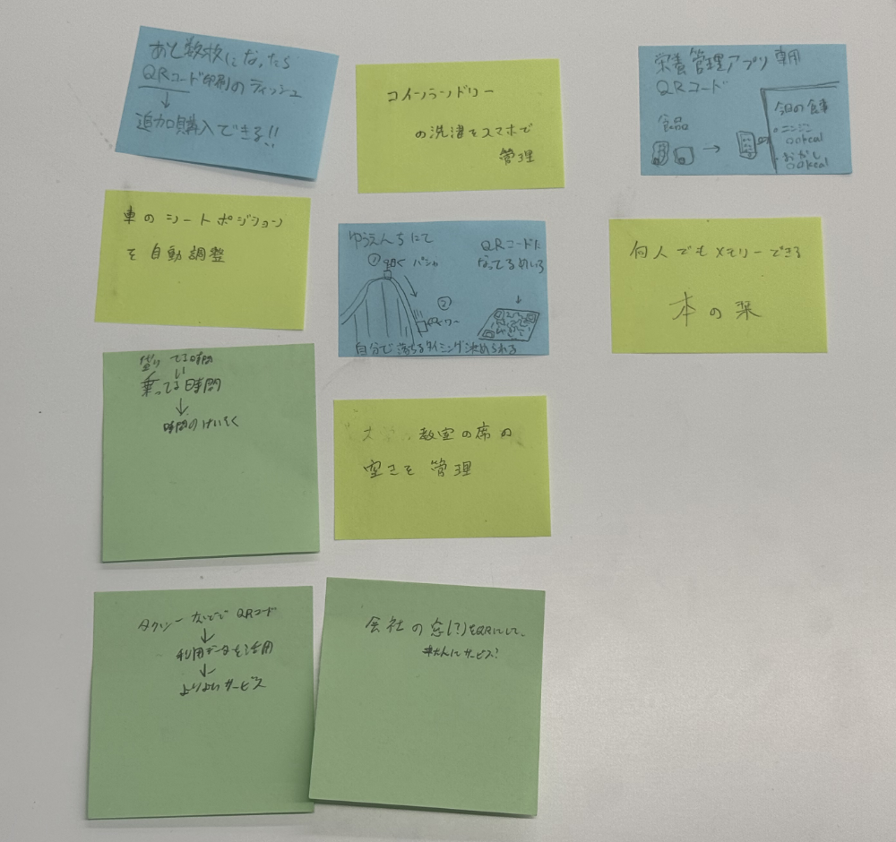
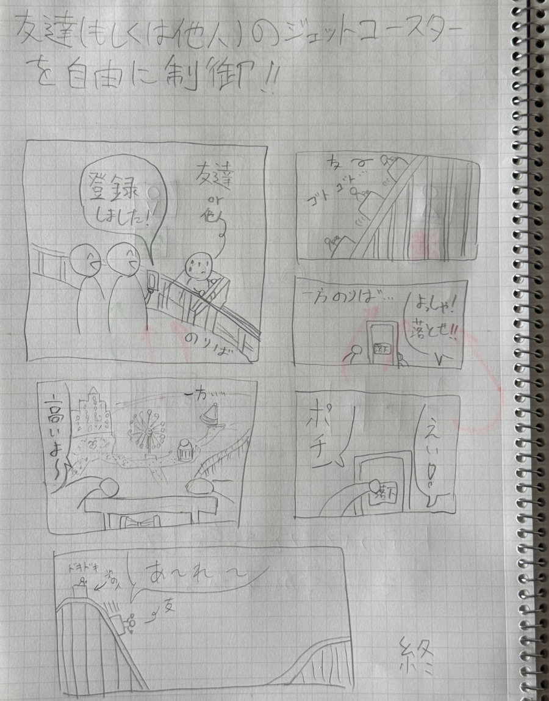

IoTに関して
2025/4/20
【IoTとは何か】
IoTってなに？
IoT(Internet of Things)は「モノのインターネット」って意味！！
もっと簡単に言うと…
「いろんな道具がインターネットにつながって、おしゃべりすること！」
たとえば？
・冷蔵庫が「牛乳なくなったよ～」ってスマホに教えてくれる
・エアコンがあなたが帰る前に勝手にお部屋を冷やしてくれる
・腕時計が「今日は1万歩歩いたね！」ってスマホに送る
IoTはなんで便利なの？
・自動でいろいろやってくれるから、”ラクになる！”
・家にいなくてもスマホで電気や鍵を操作できるから、”安心！”
・体調や生活の情報も記録できるから、”健康管理にもいい！”
まとめると…
「IoT」＝「モノがネットにつながって、かしこくなる世界」
まるで道具たちが「脳みそ」を持ったみたいなイメージ！簡単だね！！
【実験動画】
【IoT(遠隔操作)で何ができそうか？グループワークした内容】

今回のグループワークでは、「QRコードの活用例」というお題
もあったため、QRコードにどのような情報を持たせるかが
ポイントとなった。
遊園地にQRコード型の巨大迷路を作って、ジェットコースター
の落ちるタイミングで乗客が各自読み込みしたら面白いのではと
思ったが、「それ車体に落下開始ボタンあればよくね？」と
頭の中で自分の考えを否定してしまっていた。
今考えれば、逆転の発想で地上にいる人が落ちるタイミングを
決めれたら面白いし、よりIoTだなと考えついた💡
どんな技術でも、それをどのように現実世界に落とし込めるか
が全てだなと感じた。結局アイデア次第なんよ！！！！
【IoT(遠隔操作)で何ができそうか？自分で考えたアイディア（スケッチ）】

先ほど思いついたのをそのままスケッチ(マンガだけど😅)しました！！
ジェットコースターの待ち時間が楽しくなること間違いなし！！
友達を恐怖のどん底に突き落としてやろう！！！！！